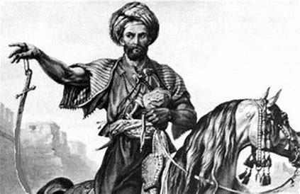

المعز لدين الله الفاطمي
المعز لدين الله الفاطمي">جوهر الصقلي


فوائد دراسه التاريخ
- فهم النفس بشكل أفضل
- تنمية التفكير النقدي
- فهم المشاكل
- الاعتراف بالتغيير
- بناء المواطنة
- يفتح التاريخ الباب أمام مجموعة واسعة من المهن الشيقة
- تطوير المهارات الحياتية الأساسية